Capturas completas del sitio original y de la mejora responsive. La portada de escritorio conserva su composición. Los pequeños ajustes de contraste y los filtros aplicados están explicados en el informe.
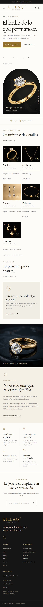
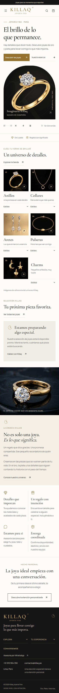
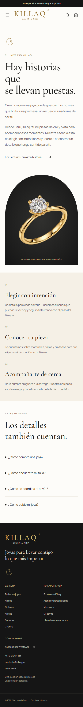
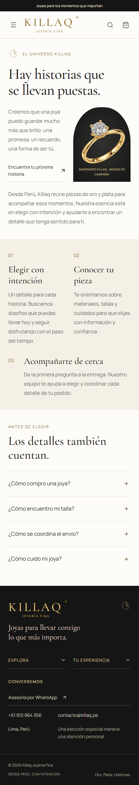
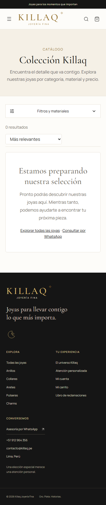
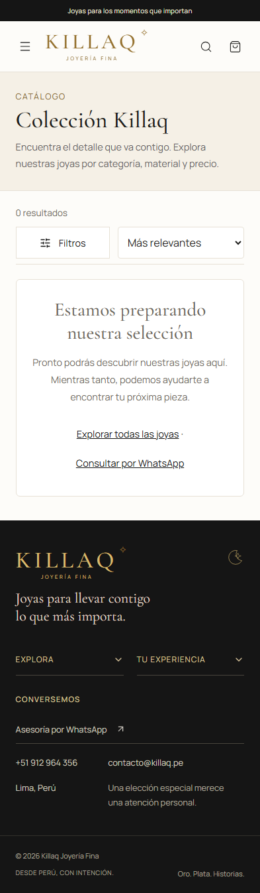
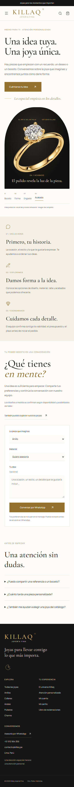
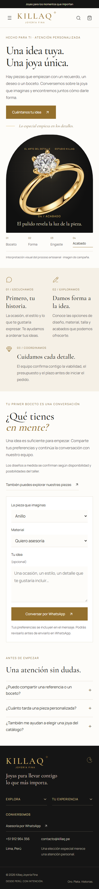
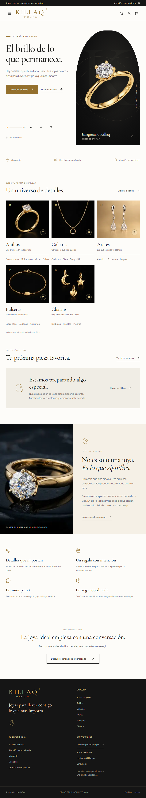
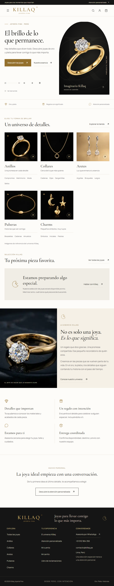
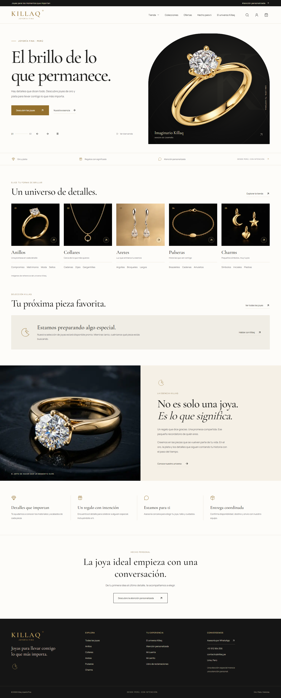
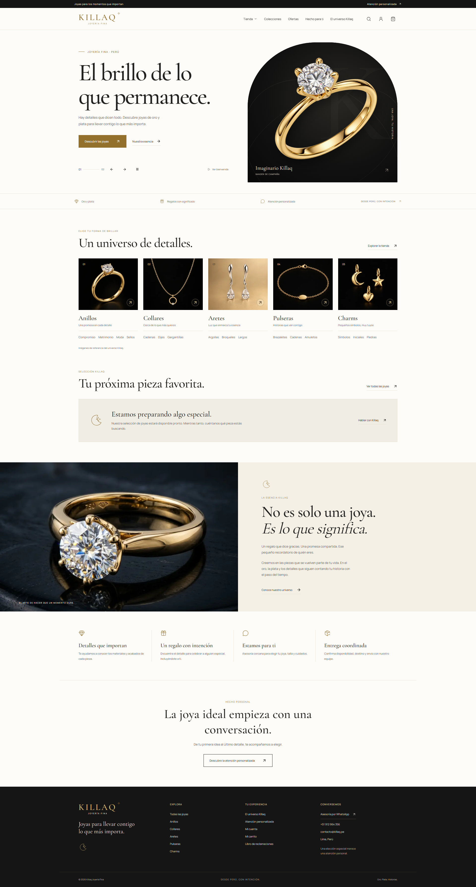